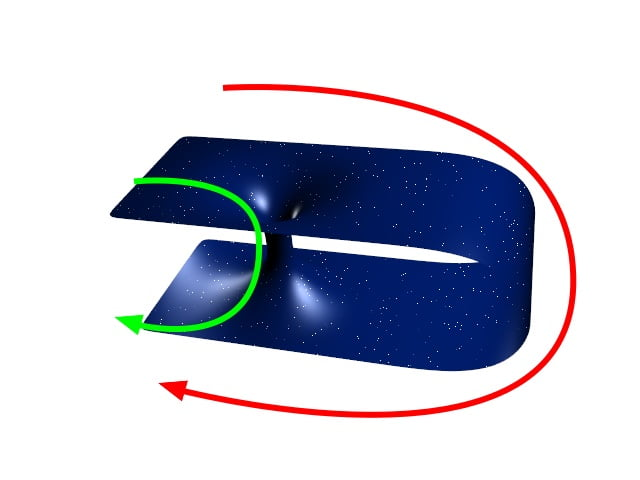
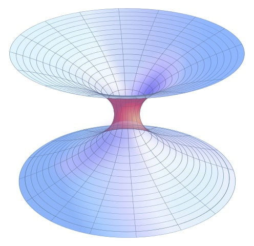
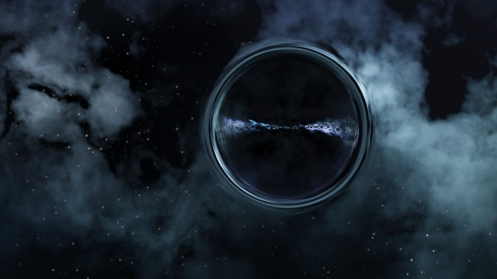

အိုင်းစတိုင်းရဲ့ နှိုင်းယှဉ်ခြင်း သီအိုရီအရ ဒီ Wormhole တွေ ရှိမယ်လို့ ဟောကိန်းထုတ်ထားပါတယ်။ ဒါပေမယ့် ဒီ wormhole တွေထဲ ခရီးသွားရင် သတိတော့ အထူးထားဖို့ လိုပါမယ်။ ဘာလို့ဆို ဒီ wormhole တွေဟာ အချိန်မရွေး ပြိုကျသွားနိုင်သလို သူ့ထဲက ဖြတ်သွားချိန်မှာ ပြင်းထန်တဲ့ ရေဒီယို သတ္တိကြွ လှိုင်းတွေနဲ့ ထိတွေ့မိနိုင်ပါတယ်။ ဒါ့အပြင် ဒီ wormhole ထဲကနေလဲ anti-matter လို ဆန့်ကျင်ဖက် ဒြပ်တွေ ထွက်လာနိုင်သေးတာမို့ အန္တရာယ် ကင်းလှတယ်လို့တော့ ပြောလို့မရပြန်ပါဘူး။
Wormhole သီအိုရီ
Wormhole တွေကို ပထမဆုံး စတင်စဉ်းစားမိကြတာက ၁၉၁၆ ခုနှစ်ကပါ။ အဲ့သည်တုန်းကတော့ wormhole လို့ မခေါ်ခဲ့ သေးပါဘူး။ ဒါကို စပြီး စဉ်းစားမိခဲ့တဲ့ သူကတော့ ဩစတြီးယန်း လူမျိုး ရူပဗေဒ ပညာရှင် လဒ်ဝစ် ဖလင်း (Ludwig Flamm) ပဲဖြစ်ပါတယ်။ အိုင်းစတိုင်းရဲ့ အထွေထွေ နှိုင်းယှဉ်ခြင်း နိယာမ (General Theory of Relativity) နဲ့ ပါတ်သက်တဲ့ ညီမျှခြင်း (equation) တစ်ခုကို ရူပဗေဒ ပညာရှင် တစ်ယောက်က ဖြေရှင်းထားတာကို စစ်ဆေးနေရင်းနဲ့ ဒီ ညီမျှခြင်းကို အခြားနည်းလမ်း တစ်ခုနဲ့လဲ ဖြေရှင်းလို့ ရနိုင်တယ် ဆိုတာကို ဖလင်း တစ်ယောက် သဘောပေါက်မိပါတယ်။ ဒီမှာ တွင်းဖြူ (White hole) ဆိုတာကို သူကစပြီး တင်ပြခဲ့တာ ဖြစ်ပါတယ်။ ဒီတွင်းဖြူဆိုတာဟာ တွင်းနက်ရဲ့ ဖြစ်စဉ်မှာ အချိန်ပြောင်းပြန် ပြန်သွားရင် ဖြစ်လာမယ့် သဘာဝ တစ်ခု ဖြစ်ပါတယ်။ (အိုင်းစတိုင်းရဲ့ သီအိုရီအရ အချိန်သည် ဒိုင်မင်းရှင်း တစ်ခုဖြစ်တဲ့အတွက် ရှေ့ကိုသွားလို့ ရသလို နောက်ပြန်သွားလို့လဲ ရပါတယ်။ အနည်းဆုံးတော့ စာရွက်ပေါ်မှာ သင်္ချာနည်းနဲ့ တွက်ချက်တဲ့ အခါ အချိန်ကို နောက်ပြန်ပြန်သွားတာကို ခွင့်ပြုထားပါတယ်)။သူက ဒီ တွင်းဖြူဆိုတဲ့ အယူအဆကို တင်ပြတဲ့အခါ ဒီတွင်းဖြူနဲ့ တွင်းနက်တွေရဲ့ အဝင်ဝတွေဟာ ဆက်နေပြီး အာကာသထဲမှာ လှိုင်ခေါင်း တစ်ခုလို ဖြစ်ပေါ်လာတယ် ဆိုပြီး တွေးဆခဲ့ပါတယ်။
၁၉၃၅ ခုနှစ်မှာတော့ အိုင်းစတိုင်းနဲ့ ရူပဗေဒ ပညာရှင် နာသန်ရိုစင် (Nathan Rosen) တို့ဟာ နှိုင်းယှဉ်ခြင်း နိယာမ (General relativity) ကို အသုံးပြုပြီး ဒီ “လှိုင်ခေါင်း” အယူအဆကို ပိုပြီး အသေးစိတ် ချဲ့ထွင်တွေးဆခဲ့ ကြပါတယ်။ သူတို့နှစ်ဦးက ဝေးကွာတဲ့ အာကာသ ဟင်းလင်းပြင်နဲ့ မတူညီတဲ့ အချိန်ကာလတွေကို ဖြတ်သန်းဆက်စပ်ပေးတဲ့ “တံတား” တွေ ရှိတယ်ဆိုတဲ့ အယူအဆကို တင်ပြခဲ့ ကြပါတယ်။
ဒီ “တံတား” အယူအဆအရ အာကာသ ဟင်းလင်းပြင်ထဲက ဝေးကွာတဲ့ အရပ်ဒေသတွေကို တစ်ခုနဲ့ တစ်ခု ဆက်စပ်ပေးထားတဲ့ ဖြတ်လမ်းတွေ ရှိတယ်လို့ ဆိုပါတယ်။ ဒီဖြတ်လမ်းတွေဟာ မတူညီတဲ့ အရပ်ဒေသနှစ်ခုကို ဆက်စပ်ပေးထားရုံတင် မကပါဘူး။ မတူညီတဲ့ အချိန်ကာလ နှစ်ခုကို ဆက်စပ်ပေးထားတာလဲ ဖြစ်နိုင်ပါတယ်။ ဒါမှမဟုတ် မတူညီတဲ့ အရပ် နှစ်ခုရဲ့ မတူညီတဲ့ အချိန်နှစ်ခုကို ဆက်စပ်ပေးထားတာလဲ ဖြစ်ကောင်း ဖြစ်နိုင်ပါတယ်။

“ဒီ အယူအဆက အမှန်ပြောရရင်တော့ တွေးဆချက် တစ်ရပ်အနေနဲ့ပဲ ရှိပါသေးတယ်။ အခုအချိန်မှာတော့ ဘယ် ရူပဗေဒ ပညာရှင်ကမှ wormhole တစ်ခုကို လတ်တလော အချိန်မှာ ရှာတွေ့လိမ့်မယ်လို့ မျှော်လင့်မထားပါဘူး” လို့ အိုရီဂွန် တက္ကသိုလ် (University of Oregon) က ရူပဗေဒ သီအိုရီ ပါမေက္ခ စတီဗင်စု (Stephen Hsu, professor of theoretical physics) က ရှင်းပြပါတယ်။
Wormhole တစ်ခုမှာ ပါးစပ်ပေါက် နှစ်ပေါက် ရှိပါတယ်။ ဒီပါးစပ်ပေါက် နှစ်ပေါက်ကို ဆက်ပေးထားတဲ့ လည်ချောင်း ရှိပါမယ်။ ပါးစပ်ပေါက်နှစ်ပေါက်ရဲ့ ပုံသဏ္ဍာန်က စက်လုံးပုံစံ ဖြစ်နေမယ်လို့ ယူဆကြပါတယ်။ ကြားက ဆက်ပေးထားတဲ့ လည်ချောင်းကတော့ ဖြောင့်ဖြောင့်တန်းတန်း ဖြစ်နေဖို့ များပါတယ်။ ဒါပေမယ့် ဖြောင့်နေတာ မဟုတ်ပဲ ကွေးပြီး ခေါက်နေတာလဲ ဖြစ်ကောင်း ဖြစ်နေနိုင်ပါတယ်။
အိုင်းစတိုင်းရဲ့ နှိုင်းယှဉ်ခြင်း သီအိုရီကို အသုံးပြုပြီး သင်္ချာနည်းနဲ့ တွက်ချက်မှုအရ ဒီ “တီတွင်း” တွေ ရှိမယ်လို့ ဟောကိန်းထုတ်ထားပါတယ်။ ဒါပေမယ့် အခုထက်ထိတော့ ဘယ် wormhole တစ်ခုမှ ရှာမတွေ့သေးပါဘူး။
သီအိုရီအရတော့ wormhole ရဲ့ တဖက်ခြမ်းမှာ ဒြပ်တွေ မတရား စုနေတဲ့ Black hole ဖြစ်နေပြီး နောက်တဖက်ကတော့ ဒြပ်မဲ့ ဖြစ်နေတဲ့ whitehole ဖြစ်နေပါလိမ့်မယ်။ ဒီလို တွင်းဖြူ ရှိမယ်ဆိုရင် ဒီတွင်းဖြူနားက ဖြတ်သွားတဲ့ အလင်းအပေါ်မှာ တခုခုတော့ ထူးခြားတဲ့ သက်ရောက်မှု ရှိမှာ ဖြစ်ပါတယ်။ ဒါပေမယ့် အခုထက်ထိတော့ ဒီလို ထူးခြားတဲ့ ဖြစ်စဉ်မျိုး မတွေ့ရသေးပါဘူး။

Wormhole ကို ဖြတ်ပြီး ခရီးသွားခြင်း
သိပ္ပံ ဝတ္ထုတွေ၊ သိပ္ပံရုပ်ရှင်တွေထဲမှာ wormhole ကို ဖြတ်ပြီး စကြာဝဠာထဲမှာ တနေရာက တနေရာကို အချိန်တိုတိုလေးအတွင်း အလွယ်တကူ ခရီးသွားနေကြတာ တွေ့ဖူးကြမှာပါ။ ဒါပေမယ့် တကယ်သာ wormhole ရှိမယ်ဆို ဒီ wormhole ကို ဖြတ်ပြီး ခရီးသွားဖို့ ကိစ္စက ရုပ်ရှင်ထဲကလို လွယ်လွယ်ကူကူ မဟုတ်ပါဘူး။ပထမ ပြဿနာကတော့ အရွယ်အစားပဲ ဖြစ်ပါတယ်။ စကြာဝဠာရဲ့ အစဦးမှာ ဖြစ်ပေါ်လာတဲ့ wormhole တွေဟာ အလွန်သေးငယ်ပြီး အဏုကြည့် မှန်ဘီလူးနဲ့ ကြည့်မှ မြင်ရမယ့် အရွယ်အစားလောက်လေးတွေ ဖြစ်နေမယ်လို့ ဆိုပါတယ်။ အရွယ်အစားအားဖြင့်ဆို 10^-33 cm အရွယ်ပဲ ရှိပါလိမ့်မယ်။ အချို့ကတော့ စကြာဝဠာကြီးက ပြန့်ကားလာတာမို့ အချို့သော wormhole လေးတွေရဲ့အရွယ်အစားကလဲ အချိုးတူ လိုက်ပြီး ကြီးလာလိမ့်မယ်လို့ ယူဆကြပါတယ်။
နောက်ပြဿနာ တစ်ခုကတော့ ဒီ wormhole တွေဟာ တည်ငြိမ်မှု မရှိတာပဲ ဖြစ်ပါတယ်။ အိုင်းစတိုင်း-ရိုစင် တံတားဟာ ကြာကြာမခံပဲ ပြိုကျသွားမယ်လို့ ၁၉၆၂ ခုနှစ်မှာ ဝှီးလား (John Archibald Wheeler) က တွက်ချက်ပြခဲ့ပါတယ်။
“ဒီ wormhole မပြိုအောင် ကြားကန်ထားဖို့ဆို ထူးခြားဆန်းပြားတဲ့ ဒြပ်ပစ္စည်းတွေ (Exotic matter) လိုအပ်မှာ ဖြစ်ပါတယ်။ ဒါပေမယ့် ပြဿနာက အဲ့လို ဒြပ်ပစ္စည်းမျိုး ဒီစကြာဝဠာထဲမှာ ရှိမယ် မရှိဘူး ဆိုတာကို ဘယ်သူမှ စဉ်းစားလို့ မရသေးပါဘူး” လို့ ပါမေက္ခ စတီဗင်စု က ရှင်းပြပါတယ်။ (မှတ်ချက် – exotic ဆိုတာက ပင်လယ်ရပ်ခြား ရေခြားမြေခြားက ထူးခြားတဲ့ အရာဝတ္ထုတွေကို ရည်ညွှန်းတဲ့ စကားလုံး ဖြစ်ပါတယ်)။
လောလောလတ်လတ် တင်ပြထားတဲ့ သုတေသန စာတမ်း တစောင်အရဆိုရင်တော့ ဒီလို ထူးခြားတဲ့ exotic matter ဒြပ်ပစ္စည်းတွေနဲ့ ဖွဲ့စည်းထားတဲ့ wormhole တစ်ခုဟာ တည်ငြိမ်မှု ရှိပြီး အချိန်အကြာကြီး ပွင့်နေနိုင်မယ်လို့ ဆိုပါတယ်။

အကယ်လို့သာ ဒီလို ထူးဆန်းဒြပ်မျိုး ရှီခဲ့မယ် ဆိုရင် အနည်းဆုံး သီအိုရီအရတော့ ဒီ ထူးဆန်းဒြပ်နဲ့ ပြုလုပ်ထားတဲ့ အမှုန်လေးတွေဟာ wormhole ကို ဖြတ်ပြီး ဟိုဖက်ကို ရောက်အောင်သွားနိုင်မယ်လို့ ဆိုပါတယ်။ ဒါပေမယ့် ဒီ wormhole တွေကို ဖြတ်ပြီး လူသားတွေ ခရီးသွားဖို့ ဆိုတာကတော့ အခက်အခဲ အများကြီး ရှီနေပါသေးတယ်။
“ဖြစ်နိုင်မယ် မဖြစ်နိုင်ဘူး ဆိုတာကတော့ လက်ရှိ အသိပညာနဲ့ဆို ဘယ်လိုမှ မသိနိုင်သေးပါဘူး။ ဒါပေမယ့် ဒီ wormhole တွေကို ဖြတ်ပြီး လူသားတွေ ခရီးသွားဖို့ ဆိုတာကို ရူပဗေဒ နိယာမတွေက တားဖြစ်ထားတယ်ဆိုတဲ့ ထင်ရှားတဲ့ လက္ခဏာတွေ ရှိနေပါတယ်။ စိတ်တော့ မကောင်းပါဘူး။ ဒါပေမယ့်ဒါက အဖြစ်မှန်ပဲလေ” လို့ နှိုင်းယှဉ်ခြင်း နိယာမနဲ့ ပတ်သက်ရင် ဆရာတဆူလို့ သတ်မှတ်ခံထားရသူ ရူပဗေဒ ပညာရှင် ကစ်ပ် သောန် (Kip Thorne) က ပြောပါတယ်။
Wormhole တွေဟာ စကြာဝဠာထဲက မတူတဲ့ အရပ်ဒေသ နှစ်ခုကိုတင် ဆက်ပေးနိုင်တာ မဟုတ်ပါဘူး။ မတူညီတဲ့ စကြာဝဠာ နှစ်ခုကိုလဲ ဆက်စပ်ပေးနိုင်ပါတယ်။ နောက်ပြီး အချို့ရူပဗေဒ ပညာရှင်တွေက wormhole တွေကို ဖြတ်ပြီး အချိန်ခရီးသွားခြင်း (Time Travel) လုပ်ဖို့ ဖြစ်နိုင်မယ်လို့ တွေးဆကြပါတယ်။
“Wormhole တွေကို ဖြတ်ပြီး အနာဂါတ်ကို ဖြစ်စေ၊ အတိတ်ကို ဖြစ်စေ ခရီးသွားနိုင်မှာ ဖြစ်ပါတယ်” လို့ ဂျာမနီက ရူပဗေဒ ပညာရှင် တဦးဖြစ်တဲ့ အဲရစ် ဒေးဗစ်စ် က ပြောပါတယ်။ ဒါပေမယ့် လွယ်မှာတော့ မဟုတ်ပါဘူး။ “wormhole တစ်ခုကို အချိန်ခရီးသွားစက် (Time machine) တစ်ခုအဖြစ် ပြောင်းပစ်ဖို့ဆိုတာ အတော် ခက်ခက်ခဲခဲ လုပ်ယူရမှာ ဖြစ်ပါတယ်။”
ဒါပေမယ့် နာမည်ကျော် ဗြိတိသျှ ရူပဗေဒ ပညာရှင် စတီဗင် ဟော့ကင်း (Stephen Hawking) ကတော့ wormhole ကို အချိန်ခရီးသွားစက် တစ်လုံးအဖြစ် ပြောင်းပစ်ဖို့ ဆိုတာ မဖြစ်နိုင်ပါဘူးလို့ ဆိုပါတယ်။
နာဆာက သိပ္ပံပညာရှင် အဲရစ် ခရစ်ရှန် (Eric Christian) ကလဲ “Wormhole ဆိုတာက အချိန်နောက်ပြန် ခရီးသွားဖို့ ဖြစ်လာတာ မဟုတ်ပါဘူး။ သူက ဖြတ်လမ်းပါ။ ဖြတ်လမ်းဆိုတဲ့အတိုင်း အဝေးမှာ ရှိနေတဲ့ နေရာတွေဆီကို မြန်မြန်ရောက်သွားမယ့် ဖြတ်လမ်းဖြစ်ပါတယ်” လို့ ရှင်းပြပါတယ်။
နောက်ပြဿနာ တစ်ခုက အပေါ်က ပြောခဲ့သလို ထူးခြားဒြပ်ပစ္စည်း (exotic matter) တွေကို ဖြည့်ထည့်ပေးခြင်းနည်းလမ်းနဲ့ ဒီ wormhole တွေ ပြိုမကျအောင် ထိန်းထားနိုင်မယ် ဆိုသည့်တိုင် ပုံမှန် ဒြပ်ပစ္စည်းတွေ ဝင်ရောက်သွားချိန်မှာ ဒီအထောက်အပံ့တွေ ပြိုကျပြီး wormhole တစ်ခုလုံး ပျက်စီးသွားနိုင်တဲ့ အန္တရာယ်က ရှိနေပါသေးတယ်။
အကယ်လို့ wormhole တွေ ရှာတွေ့ခဲ့ပြီ ဆိုပါစို့။ ယနေ့ခေတ် နည်းပညာနဲ့တော့ ဒီ wormhole တွေကို တည်ငြိမ်အောင် ၊ ပြီးတော့ ဒီ wormhole သေးသေးလေးတွေကို လူဝင်လို့ရတဲ့ အရွယ်ထိ ကြီးအောင်ချဲ့ဖို့ ဆိုတာက မဖြစ်နိုင် သေးပါဘူး။ ဒါပေမယ့် ရူပဗေဒ ပညာရှင်တွေကတော့ တနေ့နေ့မှာ ဒီနည်းပညာက အာကာသတွင်း အချိန်တိုတိုနဲ့ ခရီးသွားနိုင်တဲ့ အခြေအနေ ဖန်တီးပေးနိုင်ကောင်း ဖန်တီးပေးနိုင်မယ်လို့ ယုံကြည်ပြီး ဆက်လက် သုတေသန ပြုနေကြဆဲ ဖြစ်ပါတယ်။
“ဒီ wormhole တွေကို အသုံးချနိုင်ဖို့ဆို အရမ်း အရမ်း အရမ်းကို အဆင့်မြင့်တဲ့ နည်းပညာတွေ လိုအပ်ပါမယ်” လို့ ပါမေက္ခ စတီဗင်စုက ပြောပါတယ်။ “ဒါမျိုးဖြစ်လာဖို့က တော်တော်နဲ့တော့ ဖြစ်လာအုံးမှာ မဟုတ်ပါဘူး” လို့ သူက မှတ်ချက်ပေးပါတယ်။
Reference: What Is Wormhole Theory? | Space